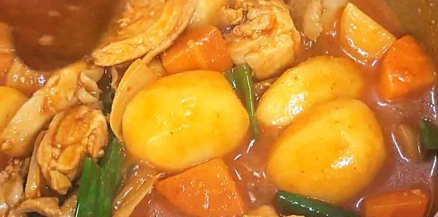
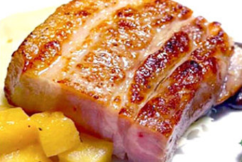
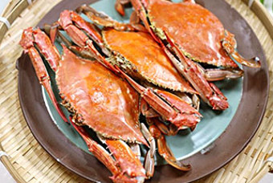

오늘 읽을만한 글
주제별로 분류된 다양한 글 모음
671
개의 글  관심주제 설정
관심주제 설정
관심주제 설정


엔터
스포츠
웹툰
자동차
경제
추천.구독
레시피
리빙


레시피
이색 음식으로 떠나는 서울 속 세계 여행
코로나 사태도 이기지 못한 것이 하나 있으니 그것은 바로 여행을 향한 우리의 갈망, 방구
석에서라도 여행을 떠나겠다며 지난 여행 사진을 들춰 보기도 하고, 가고 싶은 여행지의...
석에서라도 여행을 떠나겠다며 지난 여행 사진을 들춰 보기도 하고, 가고 싶은 여행지의...
보그 . 2일 전
레시피
일찍 가야 맛볼 수 있는 편의점 아이스크림
편의점 아이스크림 10 아이스크림만큼 우리의 기분을 단시간에 좋아지게 만드는 게 있을
까? 계절 상관없이 입 안을 시원하고 달달하게 해주는 아이스크림을 찾기 마련이다. 이...
까? 계절 상관없이 입 안을 시원하고 달달하게 해주는 아이스크림을 찾기 마련이다. 이...
데일리 . 4일 전

레시피
박태준 셰프의 맥적의 탈바꿈
박태준 셰프는 하고 싶은게 많은 사람인 것 같다. 전통 한식의 기본 틀은 유지하면서도 서
양식 조리법을 사용해 퓨전 한식을 만들어 내면서, 다양한 맛을 한 요리에 조화롭게 담아...
양식 조리법을 사용해 퓨전 한식을 만들어 내면서, 다양한 맛을 한 요리에 조화롭게 담아...
한국축산데이터 . 5일 전

레시피
꽃게찌는법 비린맛 잡고 탱글탱글 찌는시간 우리 아이 최애 꽃게찜 요리
꽃게찌는법 비린맛 잡고 탱글탱글 찌는시간 우리 아이 최애 꽃게찜 요리 아빠가 막둥이에
게 귓속말로 속닥속닥하니까 신난다고 오예를 외치는~ " #꽃게 사러 같이 갈래?" 이 말이...
게 귓속말로 속닥속닥하니까 신난다고 오예를 외치는~ " #꽃게 사러 같이 갈래?" 이 말이...
산이맘 . 1주일 전